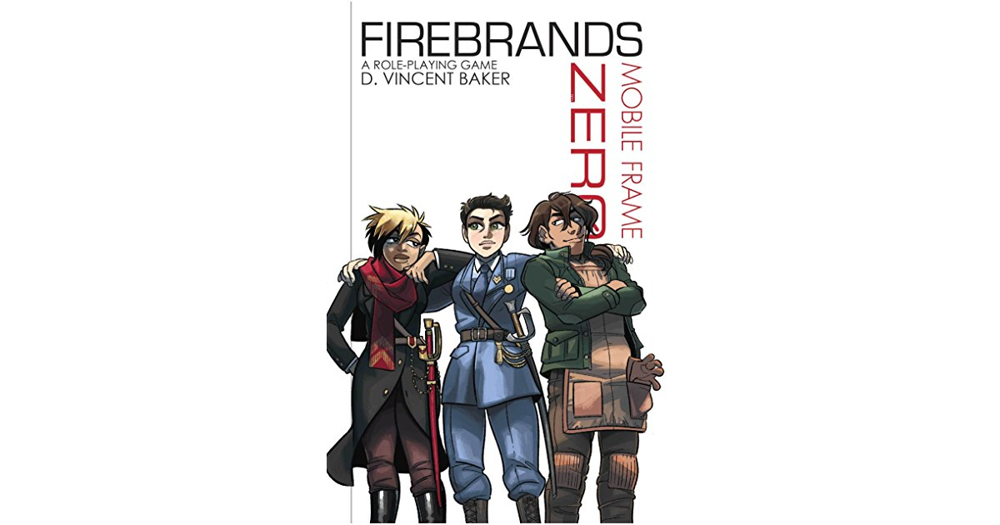
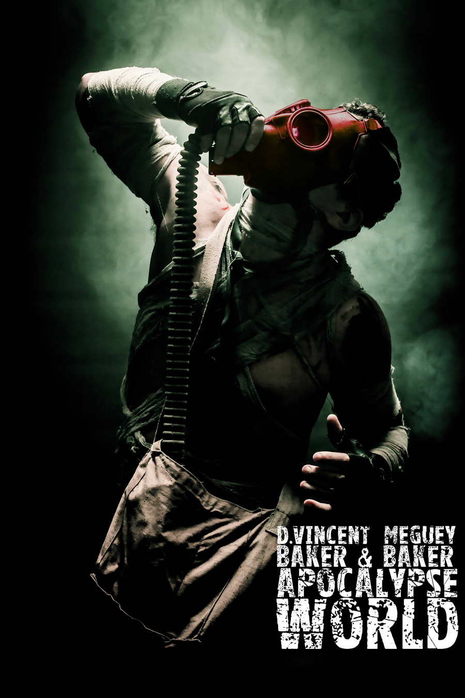
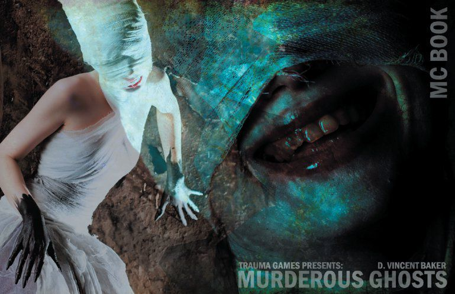

David Vincent Baker
Tabletop Game Designer
Prelude
David Vincent Baker is a designer of tabletop role playing games and the owner of Lumpley Games. His games include Dogs in the Vineyard , which won 2004 RPG Game of the year among other awards, and Apocalypse World, with co-designer Meguey Baker, which won Game of the Year, Best Support, and Most Innovative game at the 2010 Indie RPG Awards, and was 2011 RPG of the Year at both the Golden Geek Awards and Lucca Comics & Games. He maintains the journal and game archive, anyway.
Editor's note: This interview is part of a series on day jobs.
Conversations
On doing what you love full-time: An interview with tabletop game designer D. Vincent Baker. From a conversation with Brandon Stosuy.
How do you make a successful game? And once you do have a good idea, how you get it out there so people can hear about it and play it?
That’s hard. A friend of mine likes to say—I have no idea where he gets the quote: “Success takes 10 years and overnight success takes 20.”
I’ve been publishing games since 2002, and when it comes to getting people to notice, getting people to play your games, and getting games out there into peoples’ hands, there’s no substitute for doing the decades of work. That’s the worst advice I’ve ever given anybody. [laughs]
The first game I published was called Kill Puppies for Satan. This was in 2002. Google was brand new in those days, and for a while if you Googled “puppies,” Kill Puppies for Satan was on the front page. So I got a ton of hate mail, which was hilarious. I put that on my website, the hate mail I was getting.
So, that’s my advice. Publish a game called Kill Puppies for Satan and get it on the front page of Google. [laughs]
When you’ve been making games for as long as you have, how do you keep going? How do you keep coming up with ideas? Do you find yourself falling into any kind of tendencies you have to fight against? Is there any kind of comfort zone, or do you just keep coming up with new stuff?
I’m really restless. I always have a backlog of games that I’m working on, and I’m always adding to it. I finish a tenth of the games I work on. With some of them it’s because I abandon them, but for a lot of them it is just because this is the one I’m finishing for whatever reason, taken up as my muse.
So, this is the one I’m finishing, and the other ones just have to wait. Maybe they’ll get finished someday, and maybe they’ll have to wait. So, for me personally, there’s no way out of it. It’s not the, “How do I keep going?” It’s the, “Is there light at the end of the tunnel?” “How am I gonna retire?” “How am I gonna stop doing this when the time comes?”
I’m ambitious about game design. I don’t want to repeat myself. I don’t want to repeat other people. I’m driven. So, no, I don’t think I get into comfort zones. Somebody else looking at my games might say, “Oh, here’s Vincent.” But I don’t feel that way.
Have you ever started working on a game thinking, “This is going to be great,” and then nobody wants to play it? Or when you start testing it out you realize it was better in theory than practice?
Of course.You have a brilliant idea in the shower, or at two in the morning, or whatever, and it turns out to not be brilliant. It turns out not to work when you’re sitting face-to-face with a human being, who wants to do something fun, instead of whatever you thought was a good idea. Over the decades, I’ve gotten better at predicting which of my games are going to work, but not take off, and which are gonna take off. You develop a sense of that.
There was a game I published three or four years ago, where I said “I’m publishing this game, it’s free on the internet. Here you go, all of my friends and fans. I will be delighted if 20 people ever play this game. I’m proud of it. It’s a good game. It’s got interesting stuff in it. Nobody is gonna play it. Here’s my prediction. Nobody’s gonna play it.” And something like 22 people have played it. (laughs) I’m delighted. I’m blown away by the response to that game. It’s 10% more than I expected it to be.

When I started designing games, I had no clue what people responded to in games. Have you ever listened to an album, and one of the songs was the hit, and listening to the album that song was obviously going to be the hit, and you’re pretty sure the band didn’t know why? The rest of the album was not interesting. But that song, they really nailed it, or captured it, on that one song. But they have no clue. Otherwise, they would have made all the songs like that.
That’s how I used to be. I feel like that’s how a lot of designers are when starting out. As you go, you learn how to see what your games are doing, and what in your games people will respond to. That’s an important skill to cultivate as a publisher—as a self publisher, as a creator.
Now that you know what people respond to, do you still have the interest to make the things that people may not respond to, just because you’re responding to it?
I don’t feel I get to decide what I make. Whatever I’m making, that’s what I’m making. My game Apocalypse World did well, and if I had any sense that’s what I would keep doing. But, I don’t keep doing that, and I don’t know why I don’t keep doing that. So, the best I can do is predict; the best I can do is not invest in things I shouldn’t be investing in.
Where do your ideas come from for your games?
About half of my games come from me reading someone having an opinion about games, and I think they’re wrong. Like, this guy writes three sentences to me, and the whole game appears in my head, out of outrage, due to what this guy has said. That’s maybe half my games.
But, the rest of them… I read. For the the game I’m working on right this minute, a friend of mine was talking about their game on the internet; casually, in their announcement, was the name of the game company, which was Mammut games. Mammut games, and suddenly this idea for a game about mammoth hunters comes into my head.
I’ve been working on it for a week now. It was just because I read those words, “Mammut games.”

When you’re done with a game, do you keep editing it?
A lot of my games get a revision after they’ve been out for a year or two, but within narrow bounds. We’ve played the heck out of Apocalypse World for five years, and then I was like, “I think I can improve this game by five percent.” And so I did.
As my wife Meg and I—she is also my co-designer—were working on the second edition of Apocalypse World, there were a lot of places where we said, “Well, we could change these rules so they’re more of what we’re excited about now, five years later, but instead let’s save that for another game. Let’s keep Apocalypse World within its own boundaries.”
We improved it in a bunch of small ways, where maybe we could have taken it much further. But, ultimately we decided to say “What’s done is done. We’ll spiff it up a little, but we’re not gonna revisit it in any fundamental way.”
I can imagine it could become endless if you don’t set some kind of limit or framework.
Every design decision you make, you create a game that you are creating, and create a game where you make a different decision. You create this giant negative space of games that could exist, but now don’t with every design decision you make. That might be why I always have a backlog; because I’m working on a game and have to make a decision, and I think of that as creating two games. Every decision you make creates two games.
As you mentioned, you create games with your wife, Meg. I imagine there are pluses and minuses to having a creative partnership with your spouse. If you’re in the same zone all the time, do you find yourself getting competitive about things you’re working on? Or do you work as a perfect symbiotic collaborator?
The only thing we fight about is game design. Everything else is cool. She’s an artist. She’s a quilter. Long before we were working together on games, we understood each other’s creative processes. When I would say, “I know we’re watching a movie, but I gotta go write this down,” she wouldn’t get offended. And I wouldn’t get offended when she would do the same. We’re aware of those creative pressures. So that was always really easy.
But, game design is so weird and hard. We each have a vision. The only way to communicate your vision is to finish the game, so it’s hard to get someone else’s insights at the crucial process, because you can’t communicate the whole vision. So, yeah, game design is the only thing we ever fight about.
Do you have times of the day when it’s best for you to work?
I like to say that if the idea doesn’t get me out of my comfy bed to go sit at my broken desk with my bad computer, it’s not a good idea. If it can’t do that, the idea has no hope. But, you know, I try to claim space where I can. We have three kids. We’re trying to get through high school and stuff. So there’s always something else I could be doing. I do my best to say “Nope, now I’m working, now I’m working.” “Hey, kids could you take this somewhere else?” “Do you really need this right now?”
When you’re juggling all that, do you ever reach the point, where you’re just like, “I’m tired I need to not work for a bit?”
Yeah, especially when I was holding down a real job, too. Then there were unproductive months, where all I could do was go to work and come home. Cook up food, and wash a dish, and go to work, and come home. But, since switching over to doing game design as my main thing, I don’t have that, and it’s been blissful. You know, to get out of bed at two in the morning and to sit hunched over a broken computer is a kind of bliss.

How did you know when it was the right time to leave your job and to just do game design?
Oh, it was decided for me. I got laid off. But we were very glad that there was a business there to catch me.
Was that a scary moment?
It still is. I Kickstarted Apocalypse World. It made enough money that the layoff was not…terrible. Now, a year and a half later, so far, so good, you know?
How do you create deadlines for yourself? And if you don’t, how do you know when something is done?
I set bold deadlines. I’m trying to launch another Kickstarter, and any day now that will actually happen. But, there’s just another thing, and another thing, and another thing. How do you know when it’s done? My AP English teacher way back in high school used to say that “An unwritten thought is an incomplete thought.” That stuck with me. I would add that an unpublished text is an incomplete text. Until you put it in front of your audience, it’s unfulfilled.
That’s how I feel. I feel this pressure to put it in front of my audience. To put it in front of its audience, rather. And then what the audience does with it, is up to them. Like, then it’s out of my hands. I’ve taken that idea, and I’ve done my duty by that idea. I’ve given it everything I could. That’s how I know it’s done-now it’s time to put it in front of its audience.
Also, as I’ve been designing games and publishing games, I’ve been reflecting on how product design has entered into that process. I start thinking about what the object is that I’m going to hand to somebody earlier and earlier in the design process. That’s really become part of publishing.
When I started out, I was perfectly happy, and felt that I had done the idea justice, just by giving somebody a text file. But now that process has really come to include object design, physical design, or digital design. Whatever format it’s ultimately gonna take. And so, I don’t know it’s done until I take the files to the printer. And then I’m like “Ha, it’s done.” Every day I try to work. So everyday something gets closer to that point. And then eventually it reaches that point.
For the kind of work that you do, what are the most valuable resources? Time and money? Is there anything else that you need to successfully create?
I need Meg. She reads every word I write, she tries every single idea that I have. We live down the street from Emily Care Boss, and Epidiah Ravachol, who are also accomplished game designers.
I have a community, a tight local in-person/have coffee kind of community. I don’t want to say I couldn’t design without it, but it would certainly take longer. I would have more false starts. I would get stuck in my head more. Having a group of people who will look at each other’s ideas, and try each others games in the very earliest stages, is super valuable. I would recommend that to anybody.
For people just starting out, how do they get people to not just see their work, but to pay attention to it?
The best I can come up with is: Be ambitious. Don’t aim to make a game as good as someone else; punch above your weight. Have vision. Have you heard Steve Martin’s advice to a young comedian? It was “Be so good that they can’t ignore you.” And I’m like thanks, Steve. (laughs) But, that’s kind of my advice. (laughs) It’s not useful advice, but I think that you have to set your sights high.
We all play games, and we all have insights into games.As a new creator, you have old insights. Like, that’s what you’re doing, and that’s why you’re creating games—because you have old insights. And you need to have new insights, too. If you can let those insights lead you, instead of trying to shackle them, or trying to make a conventional game in any way, you’ll do well. Talk yourself out of making another game that’s like every other game you’ve ever seen.
The best advice is often: Work hard, and maybe things will fall together. A lot of it’s luck. It’s hard to give a formula. Like, “Here you go, this is gonna make you successful.”
I have a pretty big audience, I guess. But I don’t know any better than anybody else how to get more people to pay attention. I can’t make people look at my games, any better than anybody can make people look at their games. You know? You have to catch it.
If, suddenly, one day it dries up, do you think you’d still keep making them?
Oh, yeah. I have to. But I would have to get a job again.
Somethings